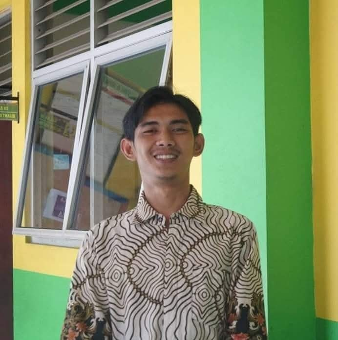

Jelajahi Dunia Unik Fiksi & Nonfiksi
Apakah kamu suka membaca dongeng keajaiban atau buku pengetahuan ilmiah? Di sini, kamu akan mempelajari perbedaan, ciri-ciri, hingga unsur penting yang membangun sebuah buku!

5 Sub-Materi
Lengkap & Contoh Teks
30 Soal Kuis
Pembahasan Instan
Interactive Game
Drag & Drop Kelompok
Audio Suara
Fitur Baca Otomatis
Capaian & Tujuan Pembelajaran
Kurikulum Merdeka - Bahasa Indonesia Fase D (Kelas VII)
Capaian Pembelajaran (CP)
Peserta didik mampu menganalisis, mengevaluasi, dan mengidentifikasi unsur-unsur pembangun serta perbedaan antara cerita fiksi dan nonfiksi, serta mampu menyajikannya secara kritis, kreatif, dan komunikatif.
Memahami Konsep Dasar
Peserta didik mampu menjelaskan pengertian dan membedakan antara cerita fiksi dan teks nonfiksi secara tepat.
Mengidentifikasi Ciri-Ciri
Peserta didik mampu mengenali ciri-ciri khas dan kebahasaan yang digunakan dalam karya fiksi maupun nonfiksi.
Menganalisis Unsur Pembangun
Peserta didik mampu menganalisis unsur intrinsik (tema, tokoh, alur, latar) dan ekstrinsik pada cerita fiksi.
Mengelompokkan Jenis Buku
Peserta didik mampu mengklasifikasikan berbagai contoh judul buku ke dalam kategori fiksi atau nonfiksi.
Materi Pembelajaran
1. Pengertian Fiksi vs Nonfiksi
Khayalan & Imajinasi
Teks yang berisi kisahan atau cerita yang dibuat berdasarkan **rekaan, khayalan, atau imajinasi** pengarang, bukan dari kejadian nyata sebenarnya.
Fakta & Data Nyata
Teks yang disusun berdasarkan **fakta ilmiah, kenyataan, hasil riset, atau pengalaman nyata** yang benar-benar terjadi di dunia nyata.
| Aspek Perbandingan | Cerita Fiksi | Teks Nonfiksi |
|---|---|---|
| Sumber Cerita | Imajinasi / Rekaan Penulis | Fakta, Data, & Realitas |
| Sifat Bahasa | Konotatif (Kiasan/Imajinatif) | Denotatif (Makna Sebenarnya) |
| Tujuan Utama | Menghibur & Menyampaikan Pesan Moral | Memberi Informasi & Ilmu Pengetahuan |
2. Ciri-Ciri & Kebahasaan
✨ Ciri-Ciri Cerita Fiksi
- Bersifat rekaan atau imajinasi pengarang semata.
- Menggunakan gaya bahasa **konotatif** (makna kiasan/tidak sebenarnya).
- Tidak memiliki sistematika baku yang kaku.
- Menyentuh emosi atau perasaan pembaca.
📚 Ciri-Ciri Teks Nonfiksi
- Ditulis berdasarkan riset, fakta, dan data yang sah.
- Menggunakan gaya bahasa **denotatif** (makna lugas/sebenarnya).
- Memiliki struktur dan sistematika ilmiah yang rapi.
- Penyajian objektif untuk menambah wawasan pembaca.
3. Unsur Intrinsik Cerita Fiksi
1. Tema
Ide pokok atau gagasan utama yang menjadi dasar seluruh isi cerita.
2. Tokoh & Penokohan
Pelaku cerita (Protagonis, Antagonis, Tritagonis) beserta sifat/wataknya.
3. Alur (Plot)
Jalan cerita atau rangkaian peristiwa (Maju, Mundur, Campuran).
4. Latar (Setting)
Gambaran Tempat, Waktu, dan Suasana terjadinya peristiwa.
5. Amanat
Pesan moral atau nasihat positif yang ingin disampaikan pengarang.
6. Sudut Pandang
Cara penulis memosisikan dirinya dalam cerita (Orang Pertama/Ketiga).
4. Jenis-Jenis Karya
🎨 Ragam Karya FIKSI
📖 Ragam Karya NONFIKSI
5. Contoh Analisis Teks Nyata
Kancil dan Kawanan Buaya Sungai
"Suatu hari, Sang Kancil ingin menyeberangi sungai deras untuk memetik buah apel segar di seberang. Kancil memanggil Buaya dan berkata bahwa Raja Hutan memintanya menghitung jumlah buaya. Dengan cerdik, Kancil melompati punggung buaya satu per satu sambil berhitung hingga sampai di seberang sungai."
Hasil Analisis Unsur Intrinsik:
- • Tema: Kecerdikan mencari jalan keluar saat terdesak.
- • Tokoh Utama: Sang Kancil (Cerdik, Cepat Berpikir).
- • Tokoh Pembantu: Buaya (Mudah Percaya).
- • Latar Tempat: Tepi Sungai Rindang.
- • Amanat: Gunakan akal sehat dan kecerdikan untuk hal yang positif tanpa merugikan orang lain secara jahat.
Kuis Pilihan Ganda (30 Soal)
Memuat pertanyaan kuis...
Navigasi Soal
Hasil Evaluasi Kuis
Media Pembelajaran Fiksi & Nonfiksi
Pembahasan Jawaban:
Permainan Kelompokkan Kartu
🎮 Cara Bermain: Tarik (*Drag*) kartu pernyataan berwarna di bawah ini, lalu lepaskan (*Drop*) ke dalam kotak target yang sesuai: **Kategori FIKSI** atau **Kategori NONFIKSI**.
Kartu Yang Harus Dikelompokkan:
Kategori Cerita FIKSI
0 ItemKategori Teks NONFIKSI
0 ItemAdit Ardiansyah, S.Pd.
Guru Bahasa Indonesia SMP
Komitmen Media Pembelajaran Interaktif
Aplikasi media pembelajaran interaktif ini dirancang khusus untuk mempermudah siswa SMP Kelas VII dalam memahami materi Cerita Fiksi dan Nonfiksi. Dengan visualisasi berwarna, ramah anak, serta fitur kuis interaktif, diharapkan pembelajaran Bahasa Indonesia menjadi menyenangkan dan bermakna.